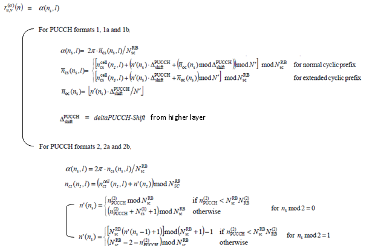

LTE Quick Reference Go Back To Index Home : www.sharetechnote.com
DMRS stands for 'DeModulation Reference Signal'. As the name stands for, this is a reference signal for PUCCH implying that eNodeB would not be able to decode PUCCH if this PUCCH DMRS is bad.
The location (Symbol Number) of PUCCH DMRS location varies depending on PUCCH type as shown below.

PUCCH DMRS is also a kind of Zadoff Chu sequence and it would not look very complicated if you see the sequence in I/Q constellation, but generation of this sequence is very complicated as follows.

